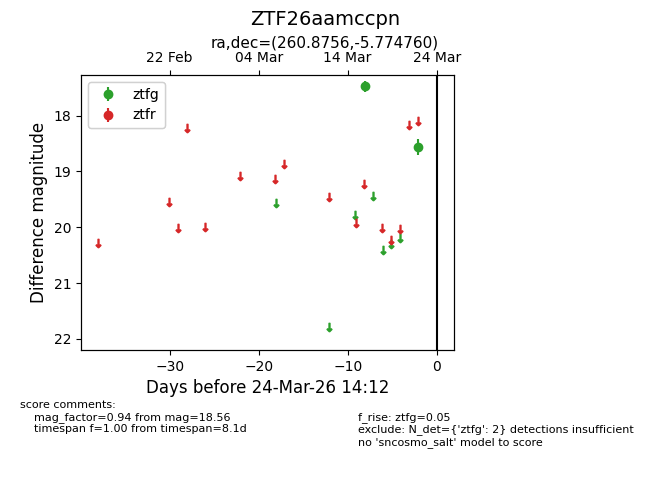
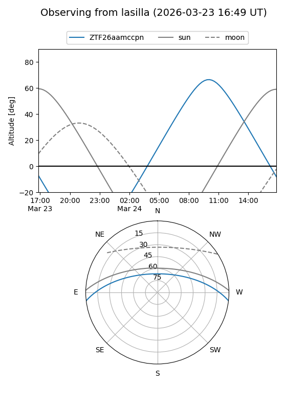
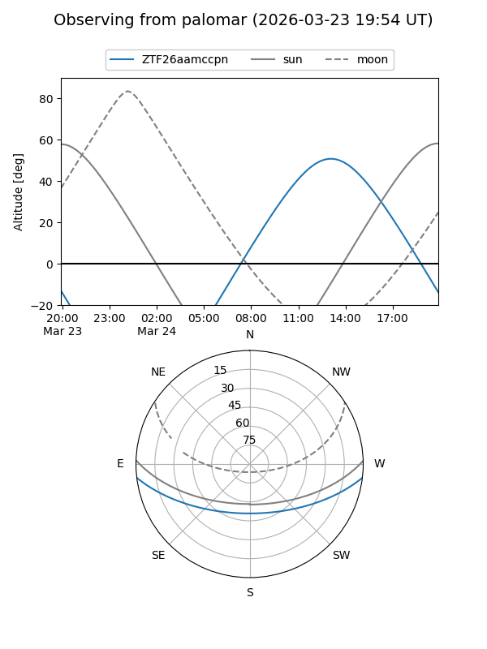

ZTF26aamccpn
Target ZTF26aamccpn at 2026-03-24 14:15
Aliases and brokers:
FINK: link
Lasair: link
ALeRCE: link
alt names
ZTF26aamccpn (ztf,fink_ztf)
Coordinates:
equatorial (ra, dec) = 260.8756,-5.77476
equatorial (HMS+DMS) = 17:23:30.14,-05:46:29.14
galactic (l, b) = (17.2289,+16.59428)
Flags:
Photometry:
last ztfg=18.56
2 ztfg detections
Lightcurve

Visibility


Additional plots